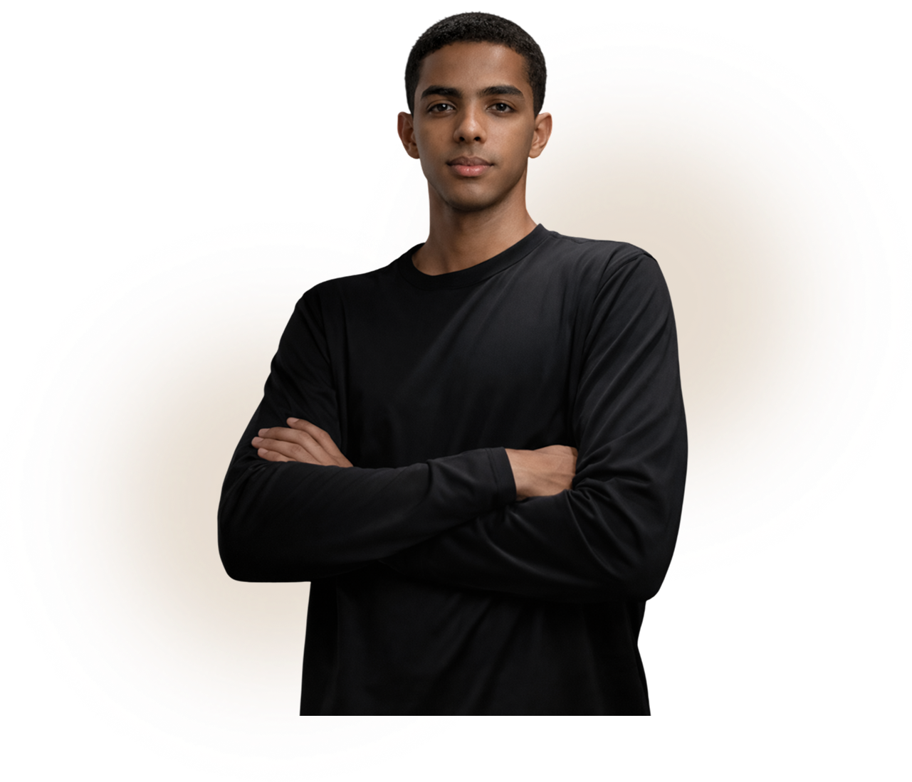
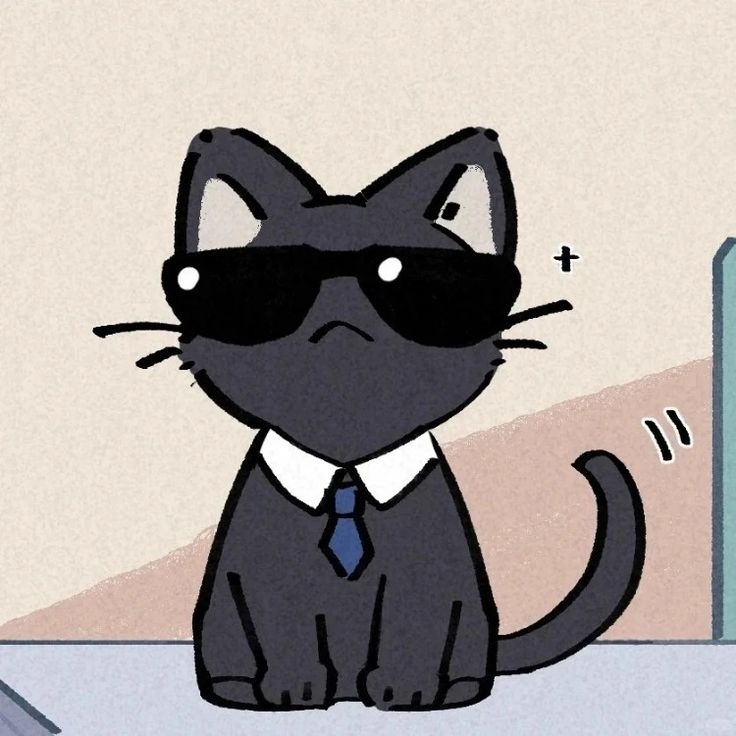

Prazer, eu sou
RYAN DA CONCEIÇÃO
Desenvolvedor Front-End iniciante, focado em criar interfaces modernas, organizadas e responsivas, enquanto aprimoro continuamente minhas habilidades no desenvolvimento web.
Saiba mais sobre mim →

Última atualização: 13/03/2026 ás 23h15
Prazer, eu sou
Desenvolvedor Front-End iniciante, focado em criar interfaces modernas, organizadas e responsivas, enquanto aprimoro continuamente minhas habilidades no desenvolvimento web.
Saiba mais sobre mim →